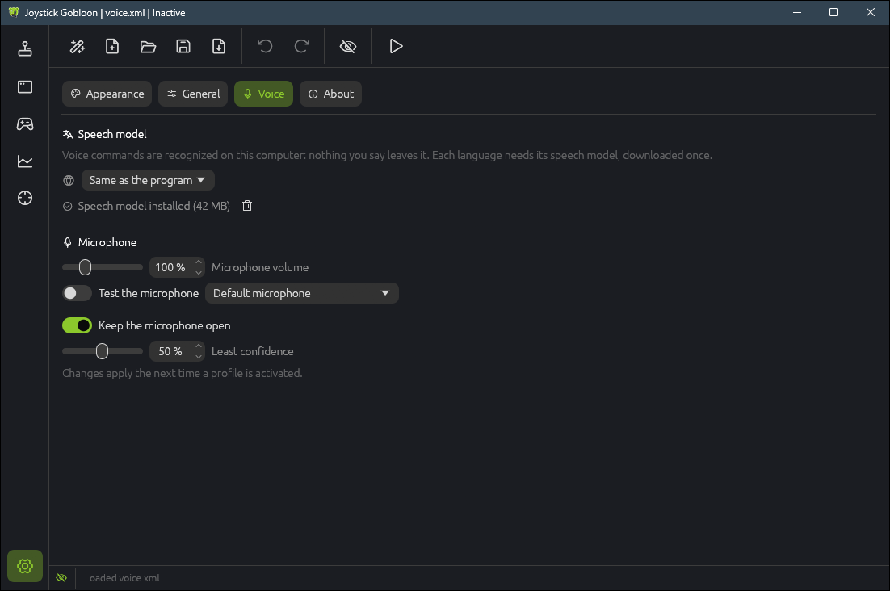
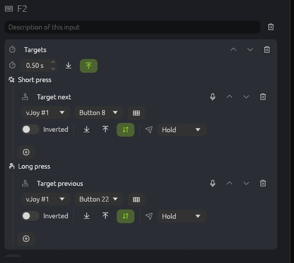

Voice commands work like extra buttons: hold your push-to-talk button, say a phrase, and its actions run, a virtual joystick button, a key or anything else a button can do. Recognition runs on your PC, offline.
The idea
How it works
A voice command is a button of its own, on the Voice tab of the Devices page, with one or more phrases that set it off. The microphone listens only while you hold a push-to-talk input: a stick button, a key or a gamepad button with the Voice input action. When you let go, what you said is matched against the profile's phrases, and the command it belongs to presses its button for a moment, so its actions run like any button's.
Only the profile's own phrases are listened for. That makes recognition quick (a few milliseconds after you let go) and keeps other words from being taken for commands.
Offline and private
Speech is recognized on your computer by the Vosk speech library: nothing you say leaves it, and nothing is recorded. The microphone is heard only while the push-to-talk input is held. The one download is the speech model of your language, once, when you ask for it.
What you need
Joystick Gobloon 0.12 or newer on Windows or Linux. The speech library comes with the installer, the portable zip and the AppImage.
A microphone: a headset, a desk microphone or a webcam's. On Windows, allow desktop apps to use the microphone in Privacy settings.
The speech model of the language you speak, about 40 MB (Korean about 85 MB). There are models for English, German, Spanish, French, Korean, Russian and Chinese.
Setting it up
1. Speech model
Open Settings, Voice. Commands are spoken in the program's language unless you choose another one in the list (Same as the program is the default), so you can keep the program in one language and speak another. Click Download the speech model; the progress bar shows the download, which is checked and unpacked by itself. Speech model installed means it is ready; the bin removes it again.
Models are kept in the voice folder of the program's data folder: %APPDATA%\JoystickGobloon\voice on Windows, ~/.config/JoystickGobloon/voice on Linux, or next to the program for a portable copy with its own settings.

2. Microphone check
On the same page, choose your microphone next to Test the microphone and switch the test on. Speak as loudly as you will give commands: the bar should reach about the middle, never the end (Too loud). Raise Microphone volume (up to 400 %) for a quiet microphone, lower it when the bar hits the end. The test hears nothing it would keep; it only shows the level.
Voice settings take effect the next time a profile is activated.
3. Push-to-talk button
Pick the input you will hold while speaking: a stick button, a key on the Keyboard tab or a gamepad button. Add the Voice input action to it and choose the microphone, or leave Default microphone, the system's. A chosen microphone that is not connected shows a warning, and the default one listens meanwhile.
A thumb button or a key you do not use for anything else works best. The push-to-talk input can have other actions too, for example the game's own radio key.
4. Commands and phrases
Open the Voice tab on the Devices page. The line at the top names the push-to-talk input (click it to go there); without one, a note says how to add it. Click + Command and type its phrases under Say any of these phrases: any of them sets the command off, so give it the words you would naturally use. The number below the phrases is the hold time.
An action you already set up on a stick button or a key can get its voice command in one click. Give the action card a name in its title, then click the microphone with a plus next to its bin: a new command saying that name opens on the Voice tab. It runs the very same action, not a copy, so a change to the card changes both. It works in the card's mode, on the base layer even when the card is on a modifier's layer: no modifier has to be held while you speak (the command's own layer buttons can still put it on one). Cards inside a Short / long press have the button too, so "target next" and "target previous" can each be said.
The microphone shows on actions one spoken press makes sense for: buttons of a virtual stick or gamepad, keys, mouse buttons, macros, chains, mode changes and the like; not on axes, Short / long press, Double tap, Condition or a temporary mode change, which would end as soon as the command lets go. It is grayed out until the card has a name, and while another command already says that name and runs something else: rename the card then. When the action already has a command (also inside a Short / long press or another container there), the microphone carries an arrow instead, and a click goes to that command. A command whose link to the action you removed keeps its phrase: the plus links the action to it again.

6. Speak
Activate the profile. The first time, the speech model takes a second or two to load. Then hold the push-to-talk input, say the phrase and let go. The status bar and the Voice tab show what was heard, how sure the recognition was and which command ran.
Going further
Several microphones
Each Voice input action has its own microphone, so two push-to-talk buttons can listen on two microphones, for example a headset and a desk microphone. Both hear the same commands.
Modes and modifiers
Voice commands are inputs like any other: their actions belong to a mode, and with modifiers they can do something else on another layer. "Gear" can lower the landing gear in one mode and do nothing in another. While the profile is paused, commands do nothing.
Hold time
A command presses its button for its hold time (0.10 s for a new one) and lets go. Raise it for a game that misses short presses or for an action that needs a long press. A command heard again while its button is still down keeps it down for another hold time.
Keep the microphone open
Some headsets stay silent for a second or two after they are opened, which would swallow a short command. With Keep the microphone open (on by default), the profile's microphones stay open while it is active, so the first word after the press is heard. Nothing is recognized until the push-to-talk input is held. Turn it off if you do not want the microphone open at all between commands.
Least confidence
Every recognition comes with how sure it is. A command heard less sure than Least confidence (50 % by default) does nothing. Raise it when other speech sets off commands, lower it when commands are often missed.
Tips
Good phrases
Two or three words are recognized more surely than one short word: "gear down" rather than "gear".
Phrases that sound alike in different commands get mixed up: make them differ from the first word.
Use everyday words of the model's language; names and abbreviations it does not know are not heard.
Give a command a second phrase for the way you say it in a hurry.
Press, then speak, then let go: a press shorter than about 0.15 s is taken for a slip and hears nothing.
What the status bar says
Loading the speech model…: right after activation, for a second or two.
Listening…: the push-to-talk input is held.
Heard "lights" (93 %): lights on: what was heard, how sure, and the command that ran (named by its first phrase).
Heard "…" (40 %): no command: not one of the phrases, or less sure than the least confidence.
Heard nothing: no speech came through; see below.
No speech model for voice commands: download it in Settings, Voice.
When something is off
Nothing happens when I speak: check that the profile is active and the push-to-talk input has the Voice input action (the Voice tab names it). Watch the status bar while you hold it.
"Heard nothing": the microphone is muted, too quiet, blocked by the system's privacy settings, or another one listens. Test it in Settings, Voice and check the microphone in the Voice input action.
The first word is lost: keep Keep the microphone open on, and start speaking a moment after the press.
Wrong or no command: the bar of the microphone test should reach about the middle. Adjust the volume, choose clearer phrases, or lower the least confidence.
Other speech sets off commands: raise the least confidence.
Changed a setting and nothing changed: voice settings apply the next time a profile is activated.
"The speech recognition library is missing": the program's files are incomplete; reinstall Joystick Gobloon.
Still stuck? The log file JoystickGobloon.log in the data folder (see Speech model) lists every utterance with its length, loudness and what was heard once Settings › General › Log level is set to All. Attach it to a bug report.